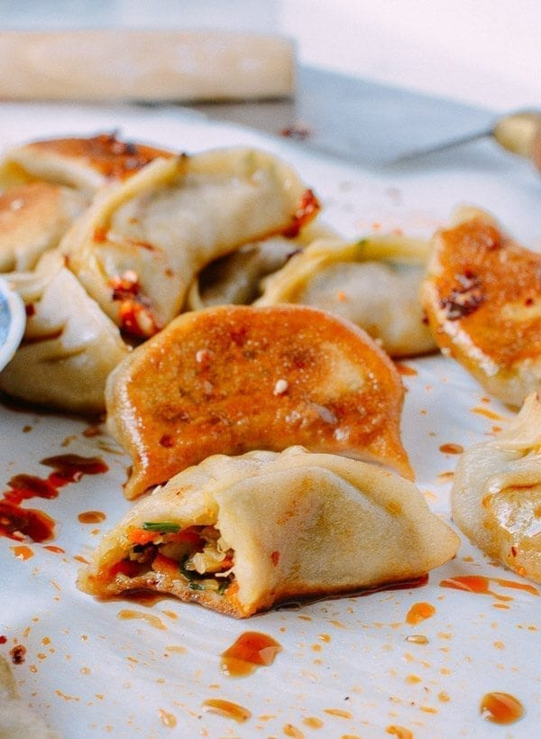

Vegetable Dumplings

Description
These vegetable dumplings are some of the best we've ever tried.
The recipe is made with simple ingredients, and you'll never have to order takeout again.
Prep: 3 hours, Cook: 20 minutes, Total : 3 hours 20 minutes, Total : Makes about 5 dozen Dumplings.
Ingredients
-
1 package of pre-made dumpling wrappers (usually 50 wrappers)
- 3 tablespoons oil
(plus ¼ cup)
-
1 tablespoon ginger (minced)
-
1 large onion (chopped)
-
2 cups shiitake mushrooms (chopped)
-
1 1/2 cups cabbage (finely shredded)
-
1 1/2 cups carrot (finely shredded)
-
1 cup garlic chives (Chinese chives, finely chopped)
-
1/2 teaspoon white pepper
-
2 teaspoons sesame oil
-
3 tablespoons Shaoxing wine (or dry sherry)
-
2 tablespoon soy sauce
-
1 teaspoon sugar
-
salt (to taste)
Steps
- In a wok or large skillet over medium high heat, add 3 tablespoons oil and add the ginger.
Cook for 30 seconds, until fragrant. Add the onions and stir-fry until translucent.
-
Add the chopped mushrooms and stir-fry for another 3-5 minutes, until the mushrooms are tender and any liquid released by the mushrooms has cooked off.
-
Add the cabbage and carrots and stir-fry for another 2 minutes, until the veggies are tender and all the liquid released has been cooked off.
Transfer the vegetable mixture to a large mixing bowl and allow to cool.
-
To the bowl, add the chopped chives, white pepper, sesame oil, shaoxing wine, soy sauce, and sugar.
Season with salt to taste (though the soy sauce will usually add enough salt to the filling), and stir in the last 1/4 cup of oil.
-
Fold dumplings, continue assembling until you've run out.
-
To cook the dumplings, steam them or pan-fry them.
To steam, put the dumplings in a steamer lined with a bamboo mat, cabbage leaf, or cheese cloth, and steam for 15-20 minutes.
-
To pan-fry, heat 2 tablespoons oil in a non-stick pan over medium high heat. Place the dumplings in the pan and allow to fry for 2 minutes.
Pour a thin layer of water into the pan, cover, and reduce heat to medium-low. Allow dumplings to steam until the water has evaporated.
Remove the cover, increase heat to medium-high and allow to fry for a few more minutes, until the bottoms of the dumplings are golden brown and crisp.
-
Serve with your favorite dumpling sauce!